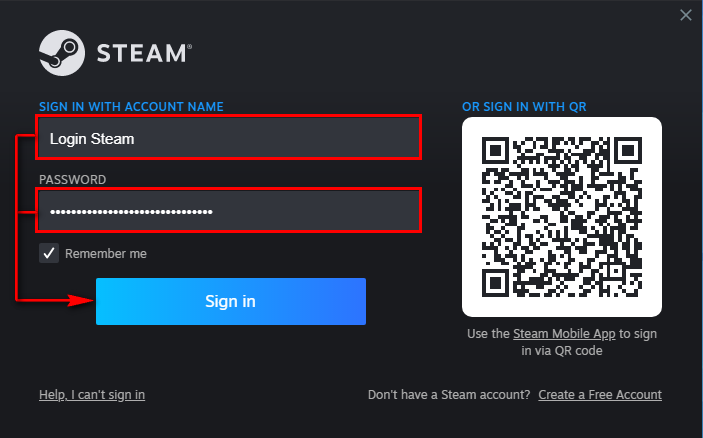
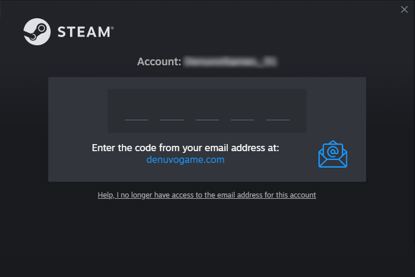
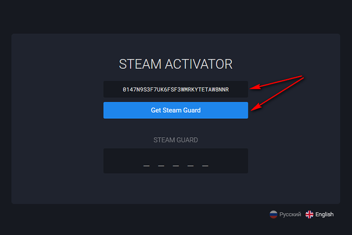
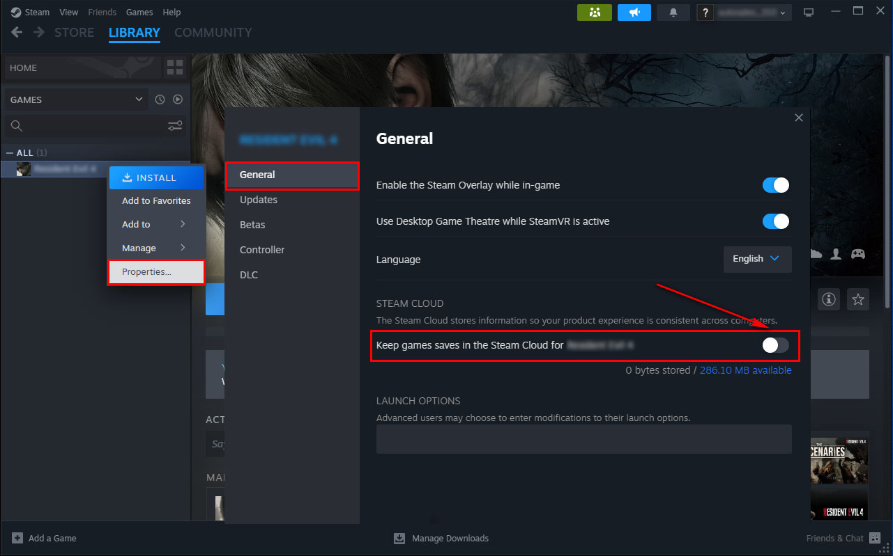
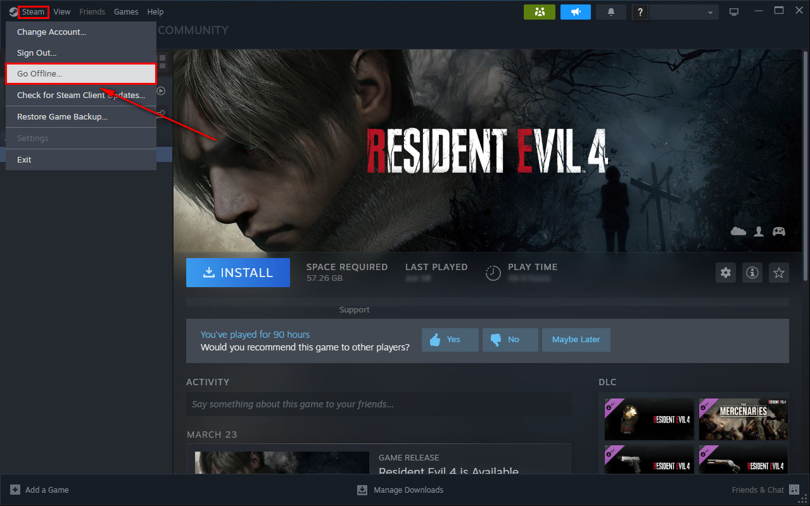
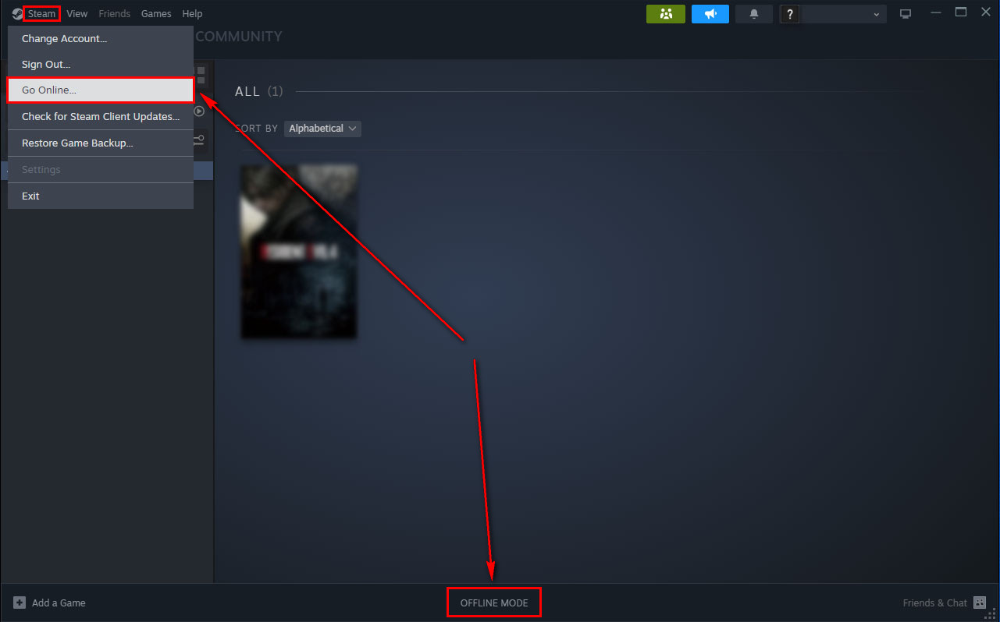
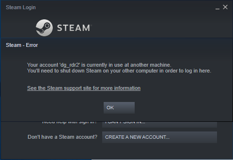
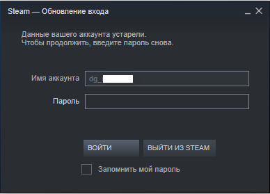

ستساعدك هذه التعليمات في الحفاظ على حساب Steam الخاص بك في حالة عمل. حتى إذا تم تغيير كلمة المرور على الحساب الذي اشتريته ، فلا يزال بإمكانك اللعب في وضع عدم الاتصال.
الخطوة 1:
أدخل اسم المستخدم وكلمة المرور للحساب المستلم وانقر فوق الزر "Sing in".
الخطوة 2:
يجب أن يطلب Steam رمز Steam Guard. للحصول على الكود اتبع الرابط https://apps.denuvogames.store/steam_activator أدخل مفتاح التنشيط الذي تم استلامه بعد الشراء وانقر فوق الزر "Get Steam Guard".
 مهم!!!! بادئ ذي بدء ، تحتاج إلى طلب الرمز Steam Guard من خلال Steam وبعد ذلك فقط من خلال المنشط ، وإلا فلن يأتي الرمز.
الخطوة 3:
بعد التفويض الناجح في حساب Steam ، انتقل إلى علامة التبويب "المكتبة" ، وابحث عن اللعبة التي تهتم بها في القائمة وضعها عند التنزيل.
الخطوة 4:
بعد انتظار انتهاء تحميل اللعبة ، قم بتشغيلها.
الخطوة 5":
انقر بزر الماوس الأيمن على اللعبة في مكتبة Steam وافتح "خصائص" في علامة التبويب "عام". تأكد من إيقاف تشغيل عمليات حفظ السحابة.
الخطوة 6:
أغلق اللعبة وانتقل إلى وضع عدم الاتصال. اهتمام!!! يحظر الاتصال بالإنترنت لأكثر من 5 دقائق (وضع تشغيل اللعبة).
الخطوة 7:
إذا كان هناك عنصر في القائمة العلوية اليسرى "الاتصال بالإنترنت ..." أو هناك نقش "وضع عدم الاتصال" ، ثم فعلت كل شيء بشكل صحيح. اكتمل التنشيط. جميع عمليات الإطلاق اللاحقة للعبة في وضع عدم الاتصال (إذا كنت بحاجة إلى تحديث اللعبة ، فانتقل إلى الإنترنت ، وقم بالتحديث ، والعودة في وضع عدم الاتصال).
Video
hereمهم!!! اقرأ هذا الدليل حتى النهاية ، فهو يحتوي على أكثر المشكلات شيوعا التي قد تواجهها. ⬇⬇⬇
- إذا تلقيت رسالة عند تسجيل الدخول إلى الحساب "يتم استخدام حسابك حاليا على كمبيوتر آخر" ، فأنت بحاجة إلى إغلاق Steam ، والانتظار بضع دقائق وإعادة إدخال حسابك.
- قد يتم طردك أيضا بشكل دوري من حسابك وكتابة أن "بيانات حسابك قديمة" لحل هذه المشكلة ، تحتاج إلى إعادة تشغيل Steam وإدخال كلمة مرور حسابك مرة أخرى. إذا تم طردك أثناء تنزيل اللعبة ، فيمكنك ترك Steam كما هو حتى يتم تحميل اللعبة بالكامل. بمجرد التحميل الكامل ، أعد تشغيل Steam.
- إذا فشل تفويضك بعد فترة ، فاستخدم المنشط مرة أخرى للحصول على رمز Steam Guard جديد.
ملاحظة التنشيط ينهار: - عند تغيير مكونات الكمبيوتر (اللوحة الأم ، المعالج). إذا كان لديك أي مشاكل ، فاكتب إلى البائع على منصة التداول.